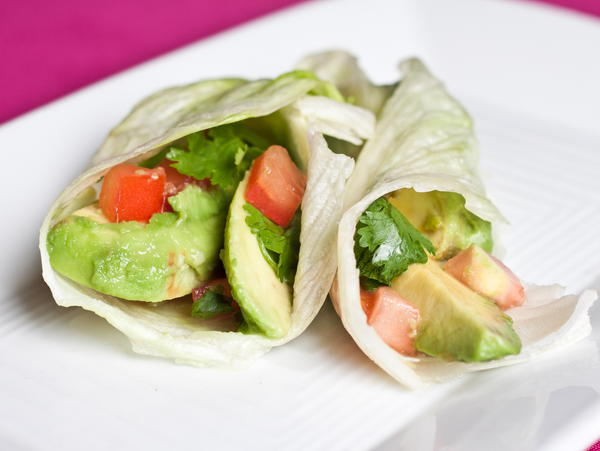

Avocado Lettuce Wraps

Description
A delicious vegan recipe that combines the creamy avocado with
punch of cilantro within a fluffy tortilla.
Ingredients
- 4 ripe avocados
- 1/2 head lettuce
- 10 flour tortillas
- 1 bunch cilantro
- 1 lime
Steps
- Heat a cast iron skillet over medium.
- Slice avocado into 1/2" chunks
- With avocado chunks in bowl, sprinkle with lime juice
- Chop lettuce and place in bowl with avo
- Chop cilantro and add to bowl with lettuce and avo
- Heat tortillas on cast iron about 30 seconds per side
- Assemble wraps
- Enjoy!